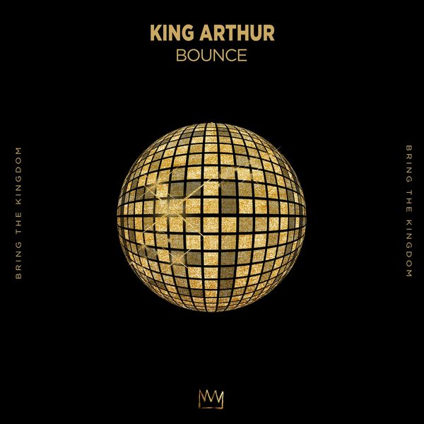

I 19 dischi
 1
CandymanR3hab, Marnik
1
CandymanR3hab, Marnik
 2
Don't ChaMosimann
2
Don't ChaMosimann
 3
Most Precious Love (Alaia & Gallo Remix)Blaze ft. Barbara Tucker
3
Most Precious Love (Alaia & Gallo Remix)Blaze ft. Barbara Tucker
![Dennis Ferrer, James Yuill, Disciples — Whisper feat. James Yuill (Extended Mix) [Defected] Max, Oliver Heldens, Party Pupils - Set Me Free feat. MAX (Martin Ikin Extended Remix)](https://cdn-images.dzcdn.net/images/cover/d2e81b26945b7d6dfa6033fe06877d3c/250x250-000000-80-0-0.jpg) 4
Whisper feat. James Yuill (Extended Mix) [Defected] Max, Oliver Heldens, Party Pupils - Set Me Free feat. MAX (Martin Ikin Extended Remix)Dennis Ferrer, James Yuill, Disciples
4
Whisper feat. James Yuill (Extended Mix) [Defected] Max, Oliver Heldens, Party Pupils - Set Me Free feat. MAX (Martin Ikin Extended Remix)Dennis Ferrer, James Yuill, Disciples
 5
Heaven (Jess Bays Extended Remix)Low Steppa feat. Mica Paris
5
Heaven (Jess Bays Extended Remix)Low Steppa feat. Mica Paris
 6
Carrera 2 (Kraak & Smaak Extended Remix)Three Drives
6
Carrera 2 (Kraak & Smaak Extended Remix)Three Drives
 7
Silence (Jerome Isma-Ae Remix)D-Nox & Baya feat. LENN V
7
Silence (Jerome Isma-Ae Remix)D-Nox & Baya feat. LENN V
 8
GoodbyeImanbek & Goodboys
8
GoodbyeImanbek & Goodboys
 9
No! (Volkoder Extended Remix)CID
9
No! (Volkoder Extended Remix)CID
 10
Lose Your Head CamelPhat (Extended Remix)London Grammar
10
Lose Your Head CamelPhat (Extended Remix)London Grammar
 11
Into the unknowDon Diablo
11
Into the unknowDon Diablo
 12
Hometown HeroesDanny Avila
12
Hometown HeroesDanny Avila

13 BounceKing Arthur 14
Channel 43 (Extended Mix)deadmau5, Wolfgang Gartner
14
Channel 43 (Extended Mix)deadmau5, Wolfgang Gartner
 15
Bad Bees (feat. Harrison First)Quintino
15
Bad Bees (feat. Harrison First)Quintino
 16
Drop It (feat. Luisah)Dubdogz, Mariana Bo, Flakkë
16
Drop It (feat. Luisah)Dubdogz, Mariana Bo, Flakkë
 17
Echo (Extended Mix)Yves V
17
Echo (Extended Mix)Yves V
 18
Move Ya Body (Extended Mix)Kevin McKay
18
Move Ya Body (Extended Mix)Kevin McKay
 19
Last Night A DJ Saved My Life (Dj Vincenzino & Frankie Gada Bootleg Extended)Indeep
19
Last Night A DJ Saved My Life (Dj Vincenzino & Frankie Gada Bootleg Extended)Indeep
La tracklist
- 1 Candyman R3hab, Marnik Intercord
- 2 Don't Cha Mosimann Defected Records
- 3 Most Precious Love (Alaia & Gallo Remix) Blaze ft. Barbara Tucker King Street Sounds
- 4 Whisper feat. James Yuill (Extended Mix) [Defected] Max, Oliver Heldens, Party Pupils - Set Me Free feat. MAX (Martin Ikin Extended Remix) Dennis Ferrer, James Yuill, Disciples Defected Records
- 5 Heaven (Jess Bays Extended Remix) Low Steppa feat. Mica Paris Armada Music
- 6 Carrera 2 (Kraak & Smaak Extended Remix) Three Drives Armada Music
- 7 Silence (Jerome Isma-Ae Remix) D-Nox & Baya feat. LENN V Armada Music
- 8 Goodbye Imanbek & Goodboys Positiva
- 9 No! (Volkoder Extended Remix) CID Musical Freedom
- 10 Lose Your Head CamelPhat (Extended Remix) London Grammar Universal Music Group International
- 11 Into the unknow Don Diablo Hexagon
- 12 Hometown Heroes Danny Avila Hexagon
- 13 Bounce King Arthur BRING THE KINGDOM
- 14 Channel 43 (Extended Mix) deadmau5, Wolfgang Gartner EpicWin
- 15 Bad Bees (feat. Harrison First) Quintino Spinnin' Records
- 16 Drop It (feat. Luisah) Dubdogz, Mariana Bo, Flakkë Musical Freedom
- 17 Echo (Extended Mix) Yves V CONTROVERSIA
- 18 Move Ya Body (Extended Mix) Kevin McKay Glasgow Underground
- 19 Last Night A DJ Saved My Life (Dj Vincenzino & Frankie Gada Bootleg Extended) Indeep Lushgroove